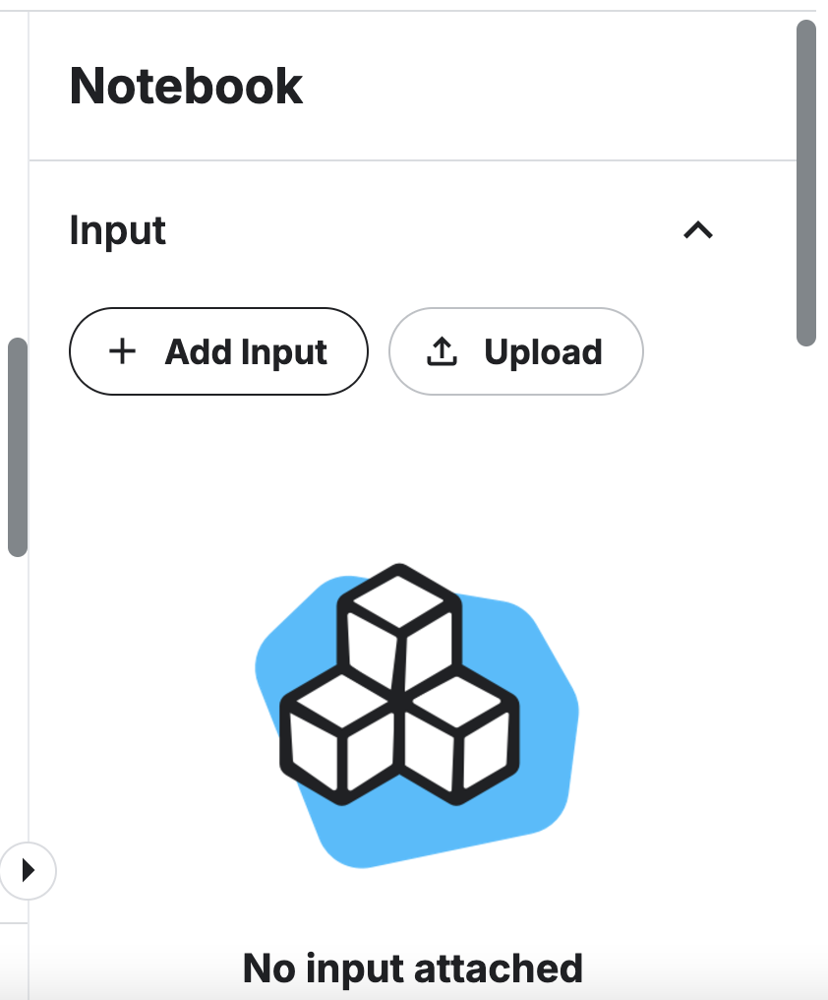

Lab Assignment 04: House Prices Regression Analysis
Objective: In this lab, you will explore the Kaggle House Prices dataset to:
- Learn how to participate in Kaggle Competition
- How to use Kaggle Notebook
- Preprocess data, including handling missing values
- Apply linear regression, Ridge, and Lasso
- Evaluate models using MSE
- Perform hyperparameter tuning
- Chose the best prediction model
Instructions
You will create your notebook in Kaggle first. Do not make your Kaggle notebook public. Once you are ready for submission, Click File -> Open Colab -> Save in your Drive -> Share Colab like you did in Lab03
Follow the steps below to complete the lab. Answer all questions marked as QUESTION. Submit the completed notebook on Gradescope as a public URL. Collaboration is allowed but submissions must be individual.
Note: You must use the Kaggle Notebook for this Lab to prepare your for your Final Project Competition.
Make sure to add your name at the beginning of the notebook
TIP: once you complete your Lab, tidy-up your notebook and move all library imports into once coding block and rerun
Submission: code cells should be executed and show outputs. However, avoid printing the entire data just use head(), for example. If you have collaborated with another student, state their name, but the submission and the notebook must be individual (no shared URL). Set the Shared URL Link to Viewable publicly and paste the link to Gradescope assignment Lab02
Step 1. Housing dataset (15pts)
Access the competition size and join the competition Link
Scroll down to download data (Select Download all)
Create a new notebook:
Rename your notebook to Lab04LastName
Expand the right sidebar: you should see Input and Upload

Upload zip, keep data private, you can use the same name, and then create (see the screenshot below)
Now you have your dataset ready and you can load it using kagglehub
-
Now you should be able to get a path to train.csv
# Paths to train file train_path = '/kaggle/input/house-prices-advanced-regression-techniques/train.csv'
-
Create a train_data dataframe
Display the first 5 columns
Check for null values. Note by default Pandas will not display all columns. So you will not be able to see all columns with null. TIP: you can filter data and display only columns with null counts greater than zero.
import os
import kagglehub
#paste the kagglehub path
- Name top three columns with missing data.
Step 2: Preprocessing (20 Points)
Drop columns from train data with more than 20% missing values.
# HINT: Create a threshold with the value of what 0.2 from the total train data length is # Create a new cleaned train data (train_data_cleaned) using .loc() where the sum of nulls is equal or less than threshold # Print drop columns dropped_columns = train_data.columns[train_data.isnull().sum() > threshold] print(f"Dropped columns: {dropped_columns.tolist()}")Fill remaining missing values with the mean (numerical) or mode (categorical).
# HINT: run train_data_cleaned.info() to see data types # float64 and int64 are numerical types; object is a categorical type # Separate columns using these types: # Separate numerical and categorical columns numerical_columns = train_data_cleaned.select_dtypes(include=['float64', 'int64']).columns categorical_columns = train_data_cleaned.select_dtypes(include=['object']).columns # Use numerical columns to fill na with the mean train_data_cleaned[numerical_columns] = # complete the rest # Fill categorical columns with the mode for column in categorical_columns: mode_value = train_data_cleaned[column].mode()[0] # Get the first most frequent value train_data_cleaned[column] = # Complete the rest # Verify no missing values remainEncode categorical variables using one-hot encoding.
One-hot encoding is a technique used to convert categorical variables (e.g., strings or labels) into a numerical format that machine learning models can process.But instead of assigning numbers like Red = 1, Blue = 2, Green = 3, each category will be represented as a binary vector 0 or 1
Color Red Blue Green Red After applying one-hot encoding, this column would be transformed into three new columns:
Red Blue Green 1 0 0 0 1 0 0 0 1 1 0 0 Calculate how many new one-hot encoded columns are created
num_new_columns = train_data_encoded.shape[1] - train_data_encoded.shape[1] + len(categorical_columns) print(f"Number of new columns created: {num_new_columns}")Normalize the numerical features using StandardScaler. Apply normalization to train_data_encoded.
Display the first five columns for train_data_encoded
You may want to also use
train_data_encoded = train_data_encoded.dropna()in case if you missed any nullsCreate X and y. Remember your target is SalePrice
Split train_data_encoded into train and test. You can chose 80-20 or 70-30.
- How many columns did you drop?
- How many new columns were created by one-hot encoding?
- Explain: Why is one-hot encoding better than assigning numerical labels arbitrarily?
- Explain: Why z-score is a more preferred normalization method for this dataset?
Step 3: Baseline Linear Regression (15 Points)
Train a baseline linear regression model using the training set.
Evaluate the model using MSE. Display the results.
- How did the baseline model perform?
Step 4: Regularized Regression (Ridge and Lasso) (20 Points)
Hyper-parameters are parameters that are not directly learnt within estimators. In scikit-learn they are passed as arguments to the constructor of the estimator classes, like alpha for Lasso.
It is recommended to search the hyper-parameter space for the best score. GridSearchCV is a common approach to parameter search: for given values, GridSearchCV exhaustively considers all parameter combinations
We are going to use a grid search from sklearn to find the best value of the regularization parameter alpha for a Ridge regression model using cross-validation
We define parameters alpha like this: param_grid = {'alpha': [0.01, 0.1, 1, 10, 100]}
Alpha is the regularization strength for Ridge regression: Smaller values of alpha: Less regularization, allowing the model to fit the data more closely (potentially overfitting). Larger values of alpha: More regularization, which penalizes large coefficients, reducing overfitting.
Then we use gridridge_grid = GridSearchCV(Ridge(), param_grid, scoring='neg_mean_squared_error', cv=5). It Automates the process of trying multiple hyperparameter combinations and
selects the best one based on a scoring metric
We use scoring='neg_mean_squared_error' because GridSearchCV maximizes the scoring metric, but we need to minimizes MSE so we can maximize its negative.
We use cv=5 which is Cross-validation with 5 folds:
- Splits the training data into 5 parts (folds)
- Trains the model on 4 parts and evaluates it on the remaining 1 part
- Repeats this process 5 times, each time using a different fold as the validation set
Train Ridge and Lasso regression models with default hyperparameters.
Evaluate the models using MSE. Compare with the baseline model.
Use GridSearchCV to tune the regularization parameter (alpha) for Ridge and Lasso.
from sklearn.model_selection import GridSearchCV param_grid = {'alpha': [0.01, 0.1, 1, 10, 100]} ridge_grid = GridSearchCV(Ridge(), param_grid, scoring='neg_mean_squared_error', cv=5) ridge_grid.fit(X_train, y_train) lasso_grid = GridSearchCV(Lasso(), param_grid, scoring='neg_mean_squared_error', cv=5) lasso_grid.fit(X_train, y_train) print("Best Ridge alpha:", ridge_grid.best_params_['alpha']) print("Best Lasso alpha:", lasso_grid.best_params_['alpha'])
Step 5: Model Comparison (15 Points)
Compare the performance of all models (Linear, Ridge, Lasso). Summarize their strengths and weaknesses based on metrics.
- Which model would you choose for this dataset and why?
- What did you learn from this Lab?
Grading Rubrics
- Step 1 Housing Dataset 15pts (all questions are answered)
- Step 2 Preprocessing 25pts
- Step 3 Baseline 15pts
- Step 4 Regularization 20pts (all questions are answered)
- Step 5 Comparison 15pts (all questions are answered)
- Submission, Code, Format, Help citation (10 Points)